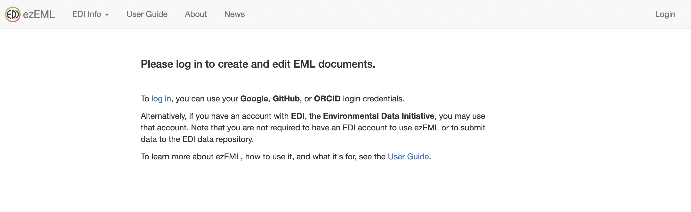
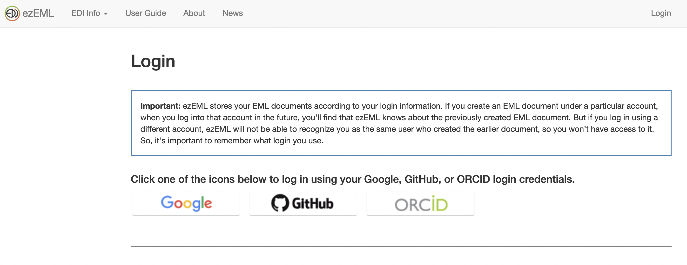

Using ezEML
ezEML is EDI user-friendly tool that streamlined the process of creating metadata in the Ecological Metadata Language (EML). It is a form-based online application that leads the user step by step through creating an EML document. Here we walk through the process of using ezEML to document your data in the Ecological Metadata Language (EML). For more information check out EDI ezEML User Guide.
Getting Started
Logging In
Log-in to ezEML from ezEML landing page.

You can log into ezEML with your Google, GitHub, or ORCiD credentials. All information you enter in ezEML will be linked to your log-in. Be sure to log in using the same method (Google, ORCID, or GitHub) each time you enter the site to update or add new metadata.

Once you click on the method of your choice, you will see a page where you can enter the corresponding user name and password.
Start a new project
Once you are logged in, you will have the option to start a new EML document or go back to editing an existing